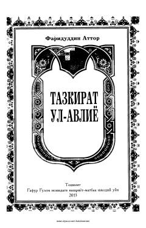

TUTasavvuf namoyondalarining hayoti va ibratli hikoyatlari jamlangan tarixiy-ma'naviy asar.
Ushbu asar buyuk mutafakkir Fariduddin Attorning tasavvuf tarixidagi eng muhim asarlaridan biri hisoblanadi. Kitobda avliyolar va tasavvuf namoyondalarining hayoti, ibratli hikoyatlari hamda ularning ma'naviy yo'li haqida qimmatli ma'lumotlar jamlangan.